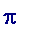

> # transcendental numbers.mws
Title
My aim
Dan Brown's The DA VINCI CODE
Some preliminary comments
Hardy and Wright, Lang, Stolarsky, Dieudonné
Irrational numbers ( briefly ) e and 
Algebraic and transcendental numbers. Euler's intuition
Liouville, Cantor, Hermite, Lindemann
Thue, Mordell, Siegel, Mahler, Schneider, Roth, Schmidt
Hilbert's seventh problem. Gelfond, Schneider
Alan Baker (1939-)
Appendix on the abc- conjecture
References
Contact details
After August 31st 2007 please use the following Gmail address: jbcosgrave at gmail.com
This page was last updated 18 February 2005 15:09:54 -0000